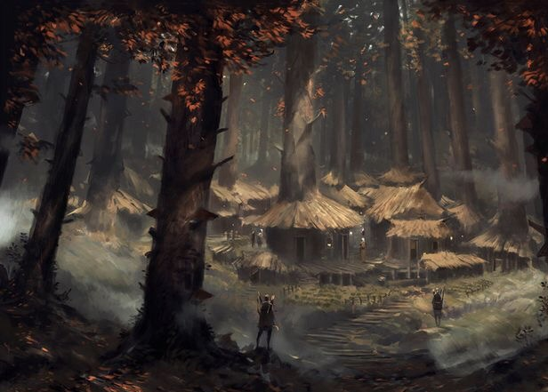

The Surviving Tribe
Once a larger people, the Icena were nearly wiped out a few generations ago following a surge in the Darkboar population from the eastern forest. As a result, they now remain a relatively small population.

The Icena are wood elves of Delmara who have lived in solitude beside Lake Imryll for centuries.
Once a larger people, the Icena were nearly wiped out a few generations ago following a surge in the Darkboar population from the eastern forest. As a result, they now remain a relatively small population.
Icena Village is the only Icena settlement.
Near the region shown on the Icena map are unexplored ancient ruins.
The Icena are led by their matriarch, the Yavethra. Upon the Yavethra’s death, a new matriarch is discovered through the Yavalis, the Blessing of Nature’s Chosen Matriarch, in which any living adult female wood elf may be chosen.
The village of Icena stands beside Lake Imryll, revered as a life-giving source of food and sustenance. The elves believe magical beings and unseen forces move within its depths beyond mortal sight.
Every century, the youngest warriors of the tribe undertake the Fellhunt, a ceremonial hunt in which the alpha Darkboar is tracked and slain.